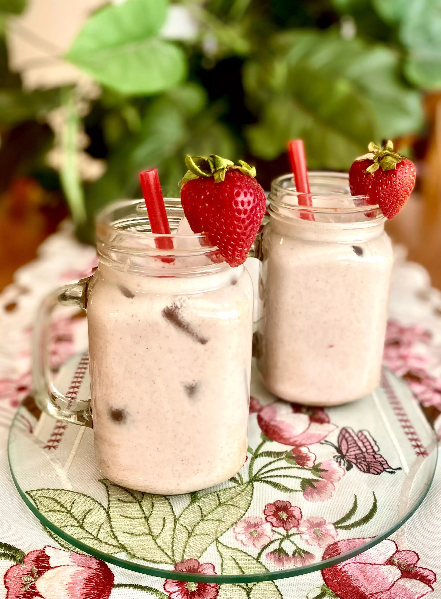

Strawberry Horchata

Delectable strawberry horchata
Horchata is a refreshing drink to make on a hot summer day.
Ingredients
- 1 1/2 cups white rice, uncooked
- 7 cups water, divided
- 1 stick of cinnamon
- 1lb strawberries
- 1-2 cups sugar
- 1 14oz evaporated milk
- Strawberries for garnishing
Steps
- In large bowl, combine rice, 3 cups water, and cinnamon stick. Let sit for at least 30 minutes, but preferably overnight.
- After soaking rice, add rice along with the water and cinnamon stick into a blender. Blend on high until completely pulverized and mixture is smooth. This may take a few minutes.
- Using a strainer and cheese cloth, pour rice water into a 2-quart pitcher and discard any pulp.
- Rinse the blender and add strawberries, 1 cup sugar and 4 cups water. Blend until smooth. Using strainer, pour puree into rice water and stir. Add evaporated milk, if using.
- Taste to see if sweet enough. If more sugar is needed, add sugar into blender with a cup of horchata and blend to dissolve.
- If sweet enough, garnish with fresh sliced strawberries and pour into glass.